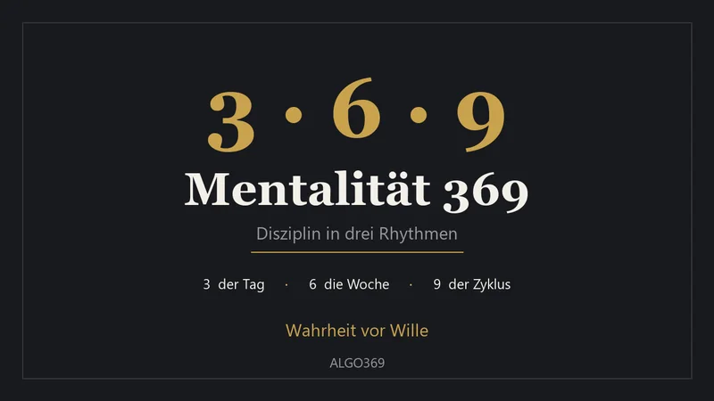
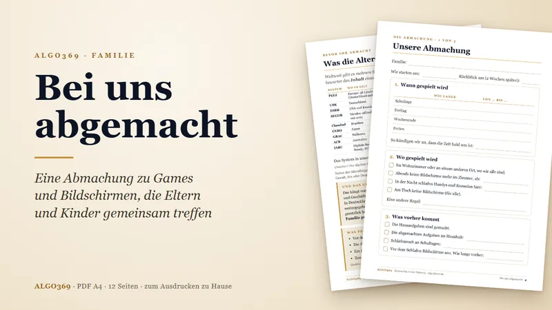
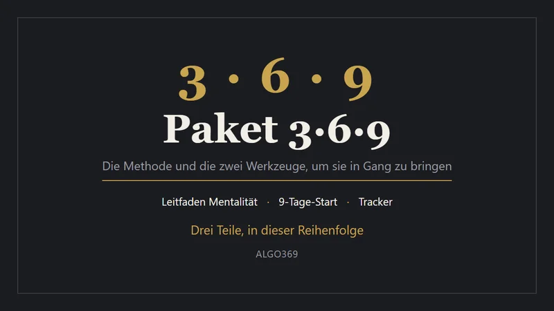
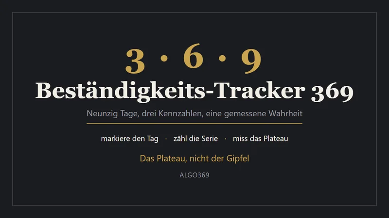
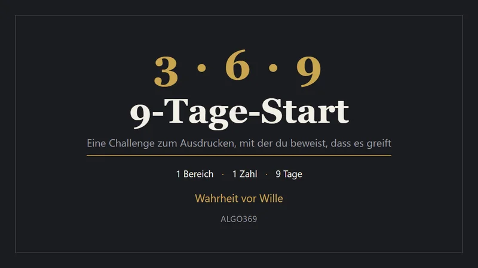
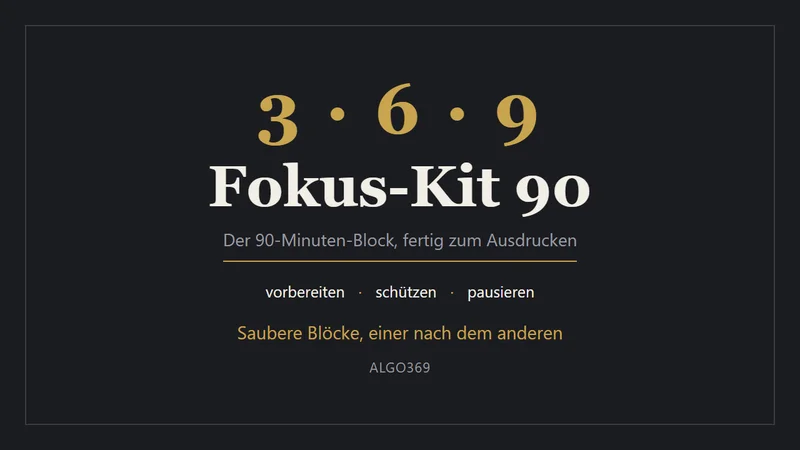
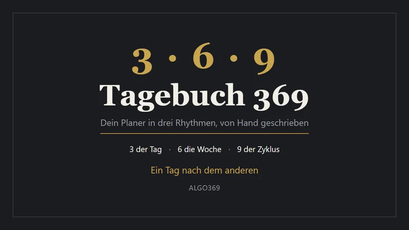
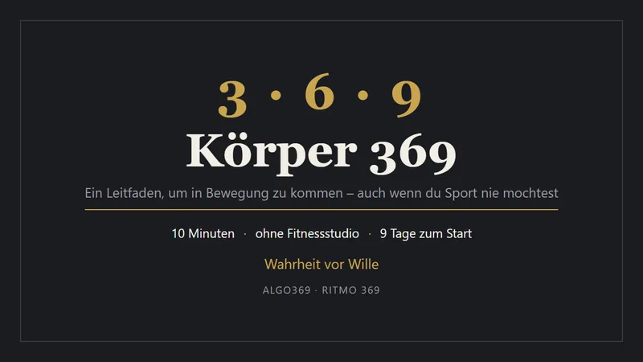
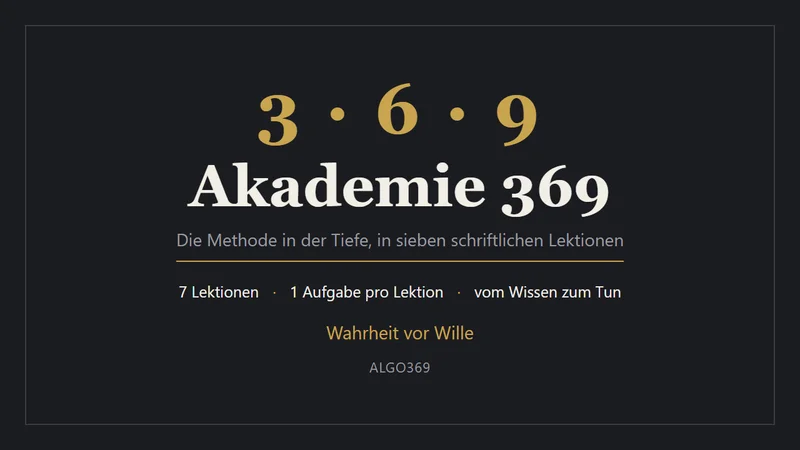

Hier anfangenLeitfaden «Mentalität 369»
Die Methode in drei Rhythmen (der Tag, die Woche, der Zyklus), die vier Fallen und eine Seite für die Wand.
PDF · 4 SeitenCHF 9.–Kaufen
Wir schreiben über Haushalt, Wohlbefinden und die kleinen Entscheidungen, die man jeden Tag trifft.
Wir empfehlen nur, was wir selbst benutzt haben oder begründen können. Wenn wir etwas nicht wissen, sagen wir das.

Hier anfangenDie Methode in drei Rhythmen (der Tag, die Woche, der Zyklus), die vier Fallen und eine Seite für die Wand.
PDF · 4 Seiten
NeuWeniger Verbote, mehr Abmachungen. Eltern und Kinder machen zusammen ab, wann, wo und was gespielt wird, was online gilt und wie viel in Spielen ausgegeben werden darf. Auch die Eltern versprechen etwas. Dann probieren sie es 2 Wochen lang aus, mit einer Tabelle zum Ausfüllen, und schauen am Ende zurück. Dazu: die Systeme für Altersfreigaben aus aller Welt nebeneinander (PEGI, USK, ESRB, ClassInd, CERO und andere), wann die Freigabe Gesetz ist und was PEGI, die USK und das ESRB Eltern raten – immer mit Quelle.
PDF mit 12 Seiten (A4) · grosse Schrift · zum Ausdrucken zu Hause · Kinder von 8 bis 16 Jahren
Der Leitfaden, der 9-Tage-Start und der Beständigkeits-Tracker in einer Datei, mit einer Leseanleitung.
PDF · 22 Seiten
Drei Kennzahlen, 90 Tage, ein Kreuz pro Tag. Er feiert die Linie, die nicht reisst, nicht den Heldentag.
PDF · 8 Seiten (A4 und A5)
Eine Challenge zum Ausdrucken: ein Bereich, eine Zahl, neun Tage. Am Ende nur eine Frage: Hat sich die Zahl bewegt?
PDF · 8 Seiten
Der 90-Minuten-Block zum Ausdrucken: Karten für die Tür, Checkliste, Schlusspunkt-Ritual und Protokollblatt.
PDF · 7 Seiten
Ein Planer zum Schreiben von Hand, mit Seiten für den Tag, die Woche und den Zyklus von neun Wochen.
PDF · 7 Seiten
NeuFür alle, die keinen Sport treiben oder aufgehört haben. 10 Minuten am Tag, ohne Fitnessstudio: ein 9-Tage-Start und ein 9-Wochen-Plan, mit Blättern zum Ausdrucken.
PDF · 15 Seiten
Die ganze MethodeSieben schriftliche Lektionen, jede mit einer Aufgabe, nach der etwas erledigt ist. Keine Videos.
PDF · 14 SeitenHier steht nur, was es gibt und was man jetzt kaufen kann. Die Zahlung läuft über die sichere Seite von Gumroad, die sich in einem neuen Fenster öffnet. Wenn dir ein Produkt nichts nützt, schreib uns, und wir erstatten dir das Geld.
Lange Texte, ohne Eile, über Dinge, die man einmal richtig verstehen sollte.
Fast alle, die eine Monstera kaufen, stellen nach ein paar Monaten dieselbe Frage: Warum kommen die neuen Blätter ganz ohne Löcher? Die Antwort sagt viel über die Pflanze – und über den Platz, an den du sie gestellt hast.
Diese Einschnitte heissen Fenestrationen und sind weder ein Fehler noch eine Krankheit. Es gibt zwei anerkannte Erklärungen, und beide haben mit der Herkunft der Pflanze zu tun: dem feuchten, schattigen Boden der tropischen Wälder im Süden Mexikos, in Guatemala und in Panama. Dort ist die Monstera keine Topfpflanze, sondern eine Kletterpflanze, die sich an Baumstämmen festhält und dem Licht entgegenwächst. Sie kann dabei über zwanzig Meter hoch werden.
Die erste Erklärung ist das Licht. Unter einem riesigen, geschlossenen Blatt liegt alles im Dunkeln. Durch die Löcher fällt Licht auf die unteren Blätter derselben Pflanze. Die zweite sind Wind und Regen: Ein Blatt voller Öffnungen übersteht einen tropischen Sturm, ohne zu reissen.
Daraus folgt der praktische Teil. Wenn deine Monstera kleine, geschlossene Blätter bildet, liegt es fast immer an einem von zwei Dingen: zu wenig Licht oder nichts zum Klettern. Ein Moosstab verändert das Aussehen der Pflanze mehr als jeder Dünger.
Und die Luftwurzeln, die aus dem Stamm wachsen, sind weder ein Problem noch Schmutz – damit hält sie sich an Bäumen fest. Du kannst sie in die Erde im Topf leiten.
Zum Namen: Monstera kommt vom lateinischen monstrum, wegen der fast monströsen Grösse der Blätter. Deliciosa bezieht sich auf die Frucht. Sie ist essbar und schmeckt wie eine Mischung aus Ananas und Banane – aber nur, wenn sie ganz reif ist. Unreif reizt sie den Mund, wegen der Kristalle aus Calciumoxalat. In der Wohnung trägt die Monstera in der Praxis fast nie Früchte.
Sie gehört zu den meistverkauften Pflanzen der Welt und zu denen, die zu Hause am häufigsten eingehen – fast immer aus demselben Grund. Und der ist das Gegenteil von dem, was man denkt.
Die Aloe vera stammt von der Arabischen Halbinsel, aus trockenem, steinigem Gelände. Sie wird schon so lange angebaut, dass man sie kaum noch wirklich wild findet: Sie ist jahrtausendelang mit den Menschen gereist. Sie taucht auf sumerischen Tontafeln aus der Zeit um 2100 v. Chr. auf und im ägyptischen Papyrus Ebers, um 1550 v. Chr., der medizinische Zubereitungen beschreibt.
Die fleischigen Blätter sind ein Speicher. Innen enthalten sie ein Gel, das fast nur aus Wasser besteht – so übersteht die Pflanze Monate ohne Regen. Dasselbe Gel wird seit Jahrhunderten verwendet, um Sonnenbrand und kleine Hautreizungen zu beruhigen.
Der häufigste Fehler: Man behandelt sie wie die anderen Zimmerpflanzen – einmal pro Woche giessen, gute, nährstoffreiche Erde, Topf ohne Abzugsloch. Nach drei Monaten werden die Blätter weich und glasig. Das ist kein Durst, sondern das Gegenteil: Die Wurzeln sind verfault.
Ein praktischer Hinweis, den nur wenige kennen: Unter der grünen Haut liegt eine gelbe Schicht, der sogenannte Latex oder Aloin, mit sehr bitterem Geschmack. Auf die Haut kommt das durchsichtige Gel aus der Mitte, nicht diese Schicht.
Und die Geschichte, dass Kleopatra sie benutzt habe, ist genau das: eine Legende. Belegt ist sie nicht. Aber sie zeigt, wie lange diese Pflanze schon einen Ruf hat.
Es ist die Zahl, die gross auf der Verpackung steht, und die Zahl, die fast alle vergleichen. Es ist auch die Zahl, die am wenigsten aussagt.
Watt ist Verbrauch, nicht Saugkraft. Die Zahl gibt an, wie viel Strom das Gerät verbraucht, nicht, wie viel Arbeit es damit leistet. Ein schlecht konstruierter Motor mit 1200 W kann schlechter saugen als ein gut konstruierter mit 500 W – der Unterschied geht als Wärme und Lärm verloren.
Seit 2017 ist das keine Theorie mehr. Die europäische Verordnung 666/2013 begrenzt Haushaltsstaubsauger seither auf 900 W. Viele dachten, die Staubsauger würden dadurch schwach. Das sind sie nicht geworden: Die Hersteller mussten die Konstruktion verbessern, statt den Motor grösser zu machen.
Die Zahlen, nach denen es sich zu suchen lohnt, sind andere:
Air Watts (AW) – misst die Saugleistung am Ausgang, also nach den Verlusten in Rohr und Düse. Das kommt dem am nächsten, was du beim Saugen spürst. Bei guten Akkusaugern liegt sie zwischen 100 und 250 AW.
Pascal (Pa) oder kPa – misst den Unterdruck, den der Motor erzeugen kann. Nützlich zum Vergleichen, aber allein nicht genug: Viel Unterdruck mit wenig Luftstrom hebt feinen Staub an und lässt den Rest liegen.
Luftstrom (Liter pro Sekunde) – er nimmt den gröberen Schmutz mit.
Die Saugkraft nützt nur, wenn die Luft durchkommt. Ein halb voller Beutel, ein verschmutzter Filter oder ein verstopftes Rohr drücken die Leistung jedes Geräts, egal wie teuer es war. Den Filter zu reinigen bringt mehr, als den Staubsauger zu wechseln – und das ist die Pflege, die fast niemand macht.
Noch ein Wort zum Vergleich zwischen Geräten mit und ohne Kabel: Moderne Akkusauger gewinnen an Bequemlichkeit und verlieren an Laufzeit auf der starken Stufe. Wenn die Wohnung gross ist, zählt nicht die maximale Saugkraft, sondern wie viele Minuten das Gerät auf dieser Stufe durchhält. Das ist meist deutlich weniger als angegeben, weil sich die Angabe auf die schwächste Stufe bezieht.
«HEPA» ist zu einer Art Gütesiegel geworden und steht auf Dingen, die nichts miteinander zu tun haben. Es lohnt sich zu wissen, was das Wort bedeutet, denn die Bedeutung ist genau festgelegt.
Ein echter HEPA-Filter hält 99,97 % der Partikel mit 0,3 Mikrometern zurück. Diese Zahl ist nicht zufällig gewählt, und die Erklärung überrascht fast alle.
Das klingt widersprüchlich, ist es aber nicht. Grosse Partikel prallen auf die Fasern und bleiben hängen. Sehr kleine bewegen sich unregelmässig (brownsche Bewegung) und stossen deshalb ebenfalls irgendwann an. Partikel von 0,3 µm schlüpfen am besten zwischen beiden Effekten hindurch – deshalb misst man den ungünstigsten Fall bei dieser Grösse. Ein Filter, der im ungünstigsten Fall 99,97 % zurückhält, hält bei allem anderen mehr zurück.
Zwei Fallen beim Kaufen:
«HEPA-Typ» oder «HEPA-ähnlich» ist nicht HEPA. Solche Ausdrücke sind rechtlich nicht definiert und können auf einem Filter stehen, der 85 % zurückhält. Das Wort, auf das es ankommt, steht zusammen mit einer Norm – in Europa die EN 1822, mit den Klassen ab H13.
Der Filter ist nicht das Gerät. Ein guter Filter in einem Luftreiniger, der kaum Luft bewegt, reinigt wenig. Entscheidend ist die CADR (Clean Air Delivery Rate) in Kubikmetern pro Stunde: Sie gibt an, wie viel saubere Luft das Gerät tatsächlich liefert. Ein Raum von 20 m² mit normaler Raumhöhe braucht deutlich mehr CADR, als die Verpackung meist nahelegt.
Und was ein HEPA-Filter nicht kann: Gase und Gerüche entfernen. Die Partikel im Rauch hält er zurück, aber der Rauchgeruch, flüchtige organische Verbindungen und der Geruch frischer Farbe sind Gase, keine Partikel. Dafür braucht es Aktivkohle. Das ist ein anderer Filter, und er nutzt sich schneller ab.
Wenn du an Allergien leidest, merkst du den Unterschied vor allem im Schlafzimmer und in der Nacht. Ein gutes Gerät am richtigen Ort bringt mehr als ein riesiges Gerät im Wohnzimmer.
Manche Pflanzen sterben, weil man sich zu wenig um sie kümmert. Lavendel stirbt am Gegenteil – und deshalb geben so viele nach dem ersten Topf auf.
Er wächst von Natur aus an den trockenen Kalkhängen des westlichen Mittelmeerraums: in der Provence, in Katalonien, in den Bergen Italiens. Magere Erde, viel Stein, Sonne den ganzen Tag. Die violetten Felder auf den Fotos sind angebaut, aber die Pflanze stammt tatsächlich von dort.
Daraus ergibt sich alles andere. Nährstoffreiche, feuchte Erde bringt ihn um. Meist läuft es so: Man kauft Lavendel, pflanzt ihn in gute, dunkle Blumenerde aus dem Sack und giesst ihn zweimal pro Woche wie die anderen – und nach zwei Monaten wird er in der Mitte grau und erholt sich nicht mehr. Das war kein Durst, sondern Wurzelfäule.
Zum Duft: Er stammt aus ätherischen Ölen, die in winzigen Härchen an der Oberfläche der Blätter und Blüten sitzen. Für die Pflanze sind sie kein Parfüm, sondern ein Schutz gegen Insekten und Hitze. Wenn du die Blätter zwischen den Fingern reibst, platzen diese Härchen – deshalb bleibt der Duft an den Händen.
Auch der Name verrät, wofür man ihn brauchte: Er geht auf das lateinische lavare zurück, waschen. Die Römer gaben Lavendel ins Badewasser und zur Wäsche. Die Geste steckt bis heute im Namen.
Etwas Praktisches, das nach ein paar Jahren das Aussehen der Pflanze verändert: nach der Blüte zurückschneiden, aber nicht bis ins alte Holz. Ohne diesen Schnitt verholzt der Lavendel von unten und wird sparrig, und dann ist nichts mehr zu machen.
Und wenn du einen Balkon hast: Eine einzige Pflanze verändert, wie viele Bienen vorbeikommen. Lavendelhonig hat genau deshalb seinen eigenen Geschmack.
Die meisten Zimmerpflanzen, die eingehen, sterben nicht an Durst. Sie sterben an zu viel Wasser – und fast immer, weil jemand beschlossen hat, «immer am Mittwoch» zu giessen.
Das Problem mit dem Kalender: Die Pflanze lebt nicht nach dem Kalender. Dieselbe Pflanze trinkt im Juli bei offenem Fenster viel mehr als im Januar bei laufender Heizung und kurzen Tagen. Wer immer gleich giesst, liegt das halbe Jahr richtig und das andere halbe Jahr falsch.
Das ist einfach und funktioniert bei den meisten Zimmerpflanzen. Zwei Ausnahmen, die man kennen sollte:
Sukkulenten, Aloe und Kakteen – warte, bis die Erde ganz trocken ist, nicht nur an der Oberfläche. Im Winter können Wochen ohne Wasser vergehen.
Farne und Pflanzen mit feinen Blättern – wollen immer leicht feuchte Erde, aber nie nasse Füsse.
So erkennst du zu viel Wasser: gelbe, weiche Blätter, Erde, die modrig riecht, kleine Mücken rund um den Topf. So erkennst du zu wenig: schlaffe, aber noch feste Blätter, Erde, die sich vom Topfrand löst.
Die beiden werden oft verwechselt, weil die Blätter in beiden Fällen hängen. Den Unterschied spürst du beim Anfassen: schlaff und weich heisst zu viel Wasser; schlaff und trocken heisst zu wenig.
Und das Wichtigste, das gar nichts mit Giessen zu tun hat: Der Topf braucht ein Abzugsloch. Ein Ziertopf ohne Abfluss macht aus jedem richtigen Giessen stehendes Wasser an den Wurzeln. Wenn dir der Topf gefällt, nimm ihn als Übertopf – die Pflanze bleibt im Plastiktopf mit Löchern und kommt so hinein.
Wir schreiben sie hier auf, damit man uns daran messen kann.
Wir sagen nicht, dass etwas dein Leben verändern wird. Wir beschreiben, was es ist, wofür es taugt und wo es versagt.
Wenn wir etwas nicht getestet haben, schreiben wir, dass wir es nicht getestet haben. Wenn etwas eine Legende ist und keine Tatsache, steht das auch so da.
Wenn wir eines Tages an einem Link eine Provision verdienen, steht das auf derselben Seite, in einfachen Worten.
Wir veröffentlichen keine Rabattcodes, keine Countdowns und keine Angebote, die ablaufen. Das verkauft, aber es informiert nicht.
Themenvorschläge, Korrekturen oder Anfragen – wir antworten auf alles, was ein Mensch geschrieben hat.